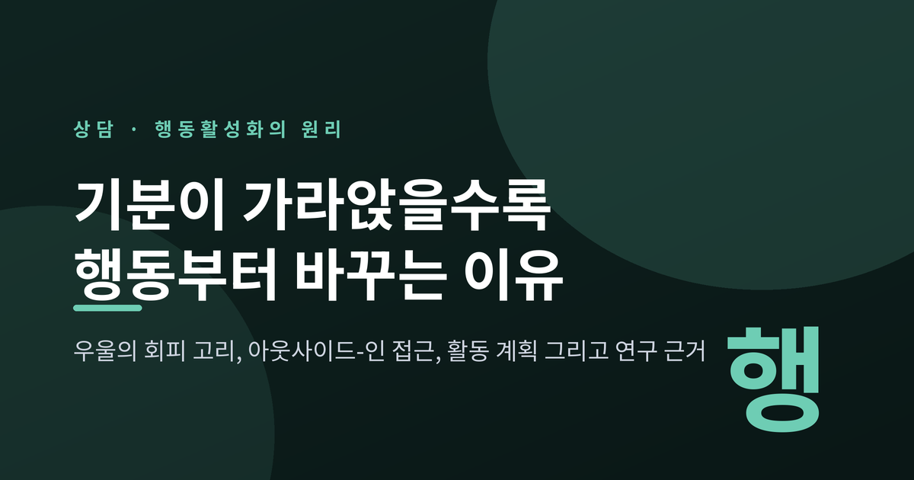
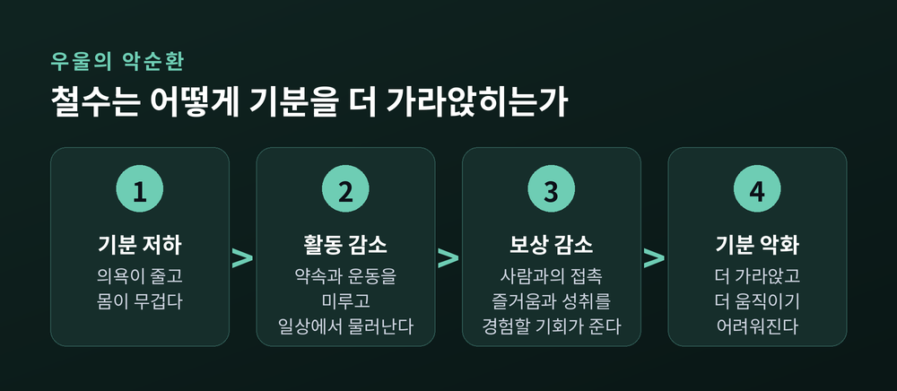
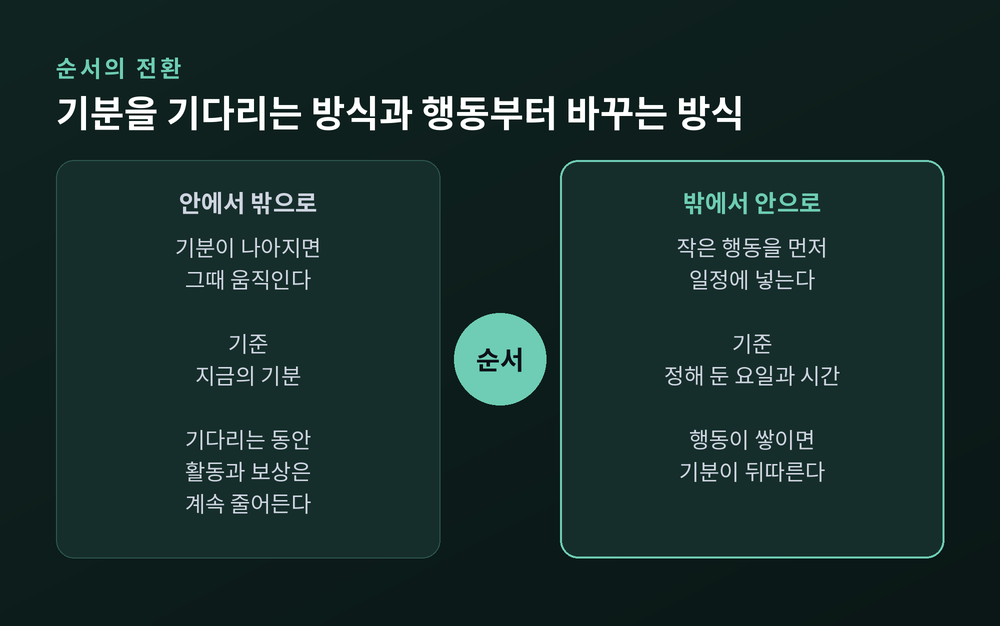
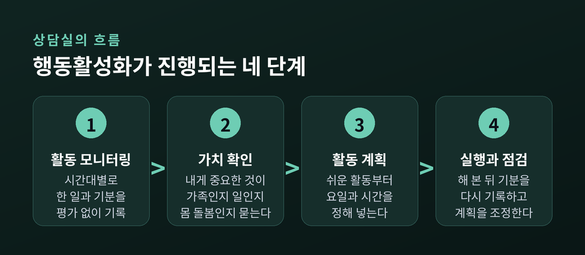
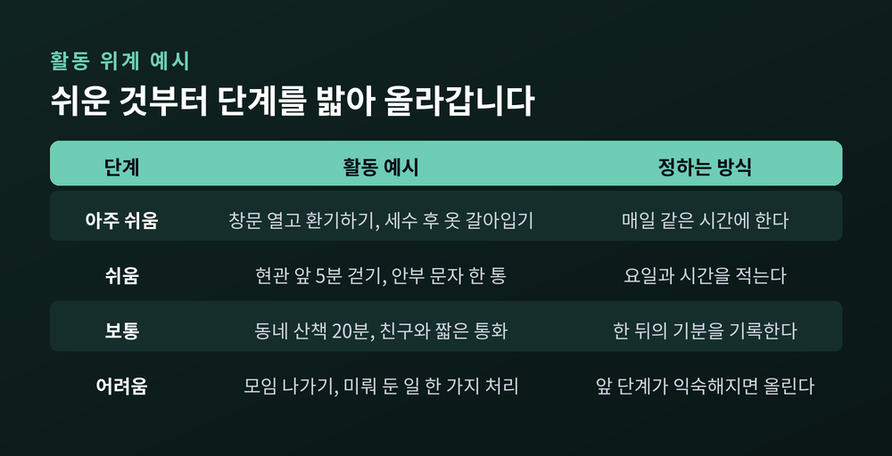
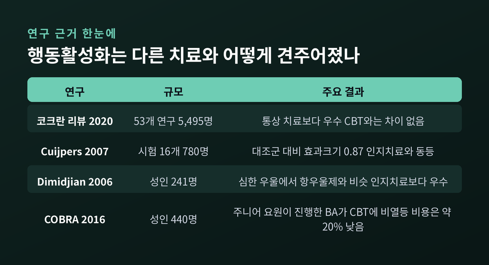

우울의 회피 고리, 아웃사이드-인 접근, 활동 계획 그리고 연구 근거

세 줄 요약
이번 글에서는 행동활성화가 무엇인지, 왜 '기분이 나아지면 움직이겠다'는 순서를 뒤집는지 정리해 보겠습니다. 이론의 출발점과 실제 진행 방식, 연구가 보여 주는 것과 보여 주지 못하는 것을 차례로 살펴봅니다. 일반화한 사례를 곁들였습니다.
우울해지면 몸이 먼저 움직이지 않습니다. 약속을 미루고, 운동을 쉬고, 집 밖으로 나가는 일이 줄어듭니다.
행동활성화의 이론은 이 장면에서 출발합니다. 미국 임상심리학회 분과 12는 사람이 우울해지면 일상의 루틴에서 점점 손을 떼고 환경에서 물러난다고 설명합니다. 그러면 사람을 만나는 즐거움, 작은 성취 같은 보상 경험이 함께 줄어듭니다. 보상이 줄면 기분은 더 가라앉습니다.

이 고리의 중심에 있는 것이 회피입니다. 피곤하니 쉬고, 쉬었으니 더 할 일이 없고, 할 일이 없으니 더 무기력해집니다. 쉬는 순간에는 편합니다. 하지만 그 편안함이 보상받을 기회를 계속 깎아 갑니다.
이 관점의 뿌리는 1970년대입니다. 찰스 퍼스터가 1973년 「우울의 기능 분석」에서, 환경에서 받는 강화가 부족하면 우울이 생기고 유지된다는 행동주의적 설명을 제시했습니다. 이후 르윈슨이 초기 행동 치료를 개척했고, 제이컵슨과 마텔 등이 행동 요소만으로도 우울을 치료할 수 있음을 보여 주며 오늘의 행동활성화로 이어졌습니다.
보통은 이렇게 생각합니다. 기분이 나아지면 의욕이 생기고, 그때 움직이면 된다고요.
행동활성화는 그 순서를 뒤집습니다. 활동을 늘리고, 그 결과 삶의 맥락이 달라지고, 그다음에 기분이 따라온다고 봅니다. 이를 안에서 밖으로가 아니라 '밖에서 안으로(outside-in)' 접근한다고 부릅니다.

여기서 오해하기 쉬운 점이 있습니다. 행동활성화는 "기분 탓이니 억지로라도 움직이라"는 격려가 아닙니다. 의지를 쥐어짜라는 말도 아닙니다. 치료의 단위가 생각이나 감정이 아니라 구체적인 행동이며, 그 행동을 아주 작게 쪼개 성공 가능성을 높이는 방법입니다.
인지치료와도 결이 다릅니다. 인지치료는 부정적 생각을 찾아 바꾸는 데 힘을 쏟습니다. 행동활성화는 생각을 바로잡는 일을 앞세우지 않습니다. 2006년 디미지안 등의 연구는 "인지치료의 이득이 사실은 행동적 요소에서 나오는 것은 아닐까"라는 가설을 세우고 이를 시험했습니다.
일반화한 예로, 몇 달째 퇴근 후 소파에서 움직이지 못하는 직장인을 떠올려 보겠습니다. 상담의 흐름은 대략 다음과 같습니다.
1) 활동 모니터링. 한 주 동안 시간대별로 무엇을 했는지, 그때 기분이 어땠는지 적습니다. 평가하지 않고 기록만 합니다. 기록을 펼쳐 보면 '기분이 가라앉기 시작하는 지점'과 그 직전의 행동이 드러납니다. 예컨대 연락을 받고도 답하지 않은 날 저녁에 기분이 가장 낮았다는 식입니다.
2) 가치 확인. 활동을 아무거나 고르지 않습니다. 이 사람에게 중요한 것이 무엇인지, 가족인지, 일인지, 몸 돌보기인지를 먼저 묻습니다. 가치와 이어진 활동이어야 보상이 되기 때문입니다.
3) 활동 계획. 보상이 될 만한 활동을 쉬운 것부터 어려운 것까지 위계로 늘어놓고, 가장 쉬운 것을 일정표에 넣습니다. 요일과 시간을 정합니다.
4) 실행과 점검. 실제로 해 보고, 한 뒤의 기분을 다시 기록합니다. 계획대로 되지 않았다면 실패로 보지 않고 활동이 너무 컸는지 시간이 맞지 않았는지를 조정합니다.

여기에 'TRAP과 TRAC'이라는 틀이 곁들여집니다. 촉발 요인(Trigger)에 반응(Response)하다가 회피 패턴(Avoidance Pattern)에 빠진 것을 찾아, 대안적 대처(Alternative Coping)로 바꾸는 방식입니다. 소파로 가는 것이 TRAP이라면, 현관에서 5분만 걸어 보는 것이 TRAC입니다.
2010년 칸터 등의 문헌 고찰은 연구마다 기법이 조금씩 달랐지만, 활동 모니터링과 활동 계획만큼은 거의 빠지지 않는 상수였다고 정리했습니다. 이 고찰은 세 개의 메타분석에서 나온 44개 시험을 다뤘습니다. 회기 수는 전체 BA가 20~24회기, 간이형인 BATD가 8~15회기입니다.

효과를 보여 주는 근거는 여러 갈래에서 겹칩니다. 핵심만 표로 정리했습니다.

2020년 코크란 리뷰는 53개 연구, 5,495명을 분석했습니다. 통상 치료와 비교하면 BA가 더 낫다는 중간 확실성의 근거가 있었고(7개 시험, 1,533명), CBT와는 유의한 차이가 없었습니다(5개 시험, 601명). 2007년 쿠이퍼스 등의 메타분석도 16개 시험(780명)에서 대조군 대비 효과크기 0.87이라는 큰 효과를 보고했고, 인지치료와 다른 심리치료만큼 효과적이라고 결론 내렸습니다.
눈에 띄는 것은 영국의 COBRA 시험입니다. 성인 우울 환자 440명을 BA와 CBT에 나누어 배정했는데, BA는 심리치료 훈련을 받지 않은 주니어 정신건강 요원이 진행했고 CBT는 전문 치료자가 진행했습니다. 12개월 뒤 BA는 CBT에 뒤지지 않았고, 두 집단 모두 약 3분의 2가 증상이 절반 이상 줄었습니다. 1인당 비용은 BA가 975파운드, CBT가 1,235파운드였습니다. 방법이 단순하기에 전문가가 아니어도 전달할 수 있다는 점이 BA의 강점으로 읽힙니다.
약물과의 비교는 조심스럽게 읽어야 합니다. 디미지안 등의 2006년 시험(241명)에서는 우울이 더 심한 참가자에서 BA가 항우울제와 비슷한 효과를 보였고, 둘 다 인지치료보다 크게 앞섰습니다. 그러나 코크란은 약물과의 비교 근거를 낮은 확실성으로 평가했습니다. "BA가 약보다 낫다"고 말할 수는 없습니다.
한계도 분명합니다. 『심리의학(Psychological Medicine)』에 실린 한 메타분석(28개 시험)은 우울에서 비활성 대조군 대비 효과크기 0.83을 보였지만, 다른 활성 치료와의 차이는 0.03~0.15로 미미했고, 연구 질이 전반적으로 낮으며 출판 편향의 증거가 있다고 지적했습니다. 코크란 역시 대부분 단기 결과이고, BA가 통상 치료보다 덜 받아들여질 가능성이 있다고 적었습니다. 정리하면 이렇습니다. BA는 다른 치료보다 우월하다기보다, 다른 치료만큼 효과적이면서 단순하고 접근하기 쉬운 방법이라는 평가가 더 정확합니다.
상담을 받지 않더라도 아이디어는 가볍게 빌려 올 수 있습니다. 다만 다음 몇 가지는 지켜 주시길 권합니다.
이 글은 일반적인 정보이지, 자가치료 매뉴얼이 아닙니다. 우울이 두 주 이상 이어지고 일상이 무너진다고 느끼신다면, 혼자 해결하려 하지 마시고 정신건강의학과 전문의나 임상심리·상담 전문가를 찾아 상의하시길 권합니다. 특히 죽고 싶다는 생각이 든다면 지체하지 말고 전문가나 가까운 사람에게 바로 도움을 요청하셔야 합니다.
또한 위의 근거는 대부분 성인 우울을 대상으로 한 연구입니다. 개인의 상태와 맥락에 따라 맞는 치료는 다릅니다. 약물이 필요한 경우도 있고, 행동활성화를 다른 치료와 병행하는 경우도 있습니다. 어떤 방식이 맞는지는 전문가와 함께 정하는 것이 안전합니다.
끝으로 한 마디만 더 드리겠습니다. 기분은 마음대로 되지 않지만, 오늘 저녁의 10분은 정할 수 있습니다.
"기분이 움직이길 기다리지 말고, 움직임이 기분을 데려오게 하라." 행동활성화가 건네는 말은 이 한 줄로 요약됩니다.
작게 움직인 하루가 쌓이면 무엇이 달라질까요. 그 답은 다음 주의 기록에서 확인하실 수 있을 것입니다.